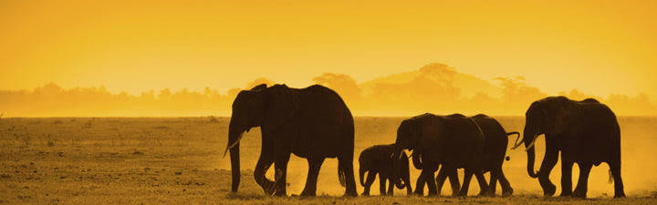

It’s no secret that the African elephant (Loxodonta africana) is a giant among
mammals, and being virtually unmissable, they’re a familiar sight on safari.
In fact, they occur in 37 different African countries. Their habitats of choice include
tropical and subtropical moist broadleaf forests, flooded grasslands and savannahs, miombo woodlands, and acacia savannahs.
One always expects an elephant to be big – they’re rather well known for it, but
upon seeing one for the first time, guests are often struck by just how colossal
they actually are. They are the largest land animals in the world, reaching 7.5
meters in length, 3.3 meters at shoulder height, and six tonnes in weight..
Grasses: A major food source, especially during the wet season when they graze for hours.
Leaves and Twigs: Gathered from trees and shrubs using their trunks, crucial during dry months.
Tree Bark: A favorite source of roughage and calcium that helps with digestion.
Fruits and Roots: Dug up or plucked when available depending on the season.
Soil and Minerals: Consumed to get essential salt and nutrients from the earth.
Large groups of elephants with a matriarch at the helm are a common sight, and
that’s because they maintain strong family units.
Their gestation period is
22 months, and they generally have a calf every three to four years.
The calves way roughly 100kg at birth, and it’s 18-24 months before they’re completely
weaned.